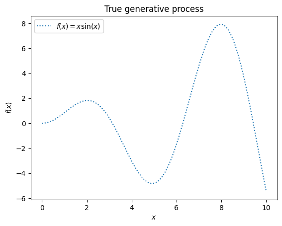
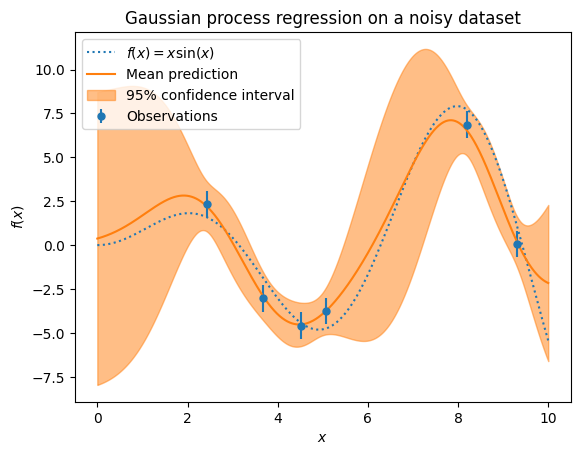

ガウス過程回帰#
ガウス過程というランダムな関数の確率分布を利用した回帰モデル
Show code cell source
import numpy as np
X = np.linspace(start=0, stop=10, num=1_000).reshape(-1, 1)
y = np.squeeze(X * np.sin(X))
import matplotlib.pyplot as plt
plt.plot(X, y, label=r"$f(x) = x \sin(x)$", linestyle="dotted")
plt.legend()
plt.xlabel("$x$")
plt.ylabel("$f(x)$")
_ = plt.title("True generative process")

Show code cell source
rng = np.random.RandomState(1)
training_indices = rng.choice(np.arange(y.size), size=6, replace=False)
X_train, y_train = X[training_indices], y[training_indices]
from sklearn.gaussian_process import GaussianProcessRegressor
from sklearn.gaussian_process.kernels import RBF
kernel = 1 * RBF(length_scale=1.0, length_scale_bounds=(1e-2, 1e2))
noise_std = 0.75
y_train_noisy = y_train + rng.normal(loc=0.0, scale=noise_std, size=y_train.shape)
gaussian_process = GaussianProcessRegressor(kernel=kernel, alpha=noise_std**2, n_restarts_optimizer=9)
gaussian_process.fit(X_train, y_train_noisy)
mean_prediction, std_prediction = gaussian_process.predict(X, return_std=True)
plt.plot(X, y, label=r"$f(x) = x \sin(x)$", linestyle="dotted")
plt.errorbar(
X_train,
y_train_noisy,
noise_std,
linestyle="None",
color="tab:blue",
marker=".",
markersize=10,
label="Observations",
)
plt.plot(X, mean_prediction, label="Mean prediction")
plt.fill_between(
X.ravel(),
mean_prediction - 1.96 * std_prediction,
mean_prediction + 1.96 * std_prediction,
color="tab:orange",
alpha=0.5,
label=r"95% confidence interval",
)
plt.legend()
plt.xlabel("$x$")
plt.ylabel("$f(x)$")
_ = plt.title("Gaussian process regression on a noisy dataset")
